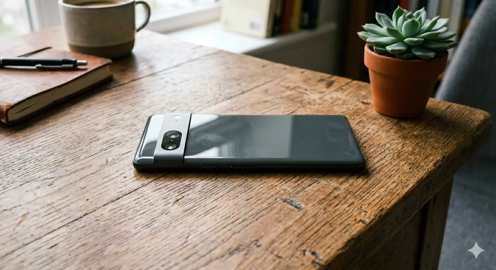

The origins of the smartphone can be traced back to early PDAs (Personal Digital Assistants) integrated with cellular connectivity. In 2007, Apple Inc. introduced the iPhone, which revolutionized the industry and established the modern smartphone design centered around a multi-touch interface.
Smartphone
A smartphone is a class of mobile phones and multi-purpose mobile computing devices. They are distinguished from feature phones by their stronger hardware capabilities and extensive mobile operating systems, which facilitate wider software, internet, and multimedia functionality, alongside core phone functions such as voice calls and text messaging.
| Smartphone | |
|---|---|
|
 |
|
| Type | Mobile phone, Handheld computer |
| Operating systems | Android, iOS |
| Functions | Telephony, Internet, Camera, GPS, Apps |
History
Features
Most modern smartphones eliminate physical keyboards in favor of a large touchscreen display. They feature high-speed internet access, advanced camera systems, and the ability to download a wide variety of third-party applications through dedicated app stores.